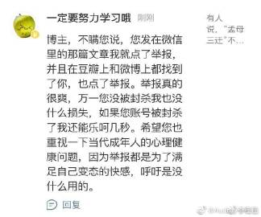
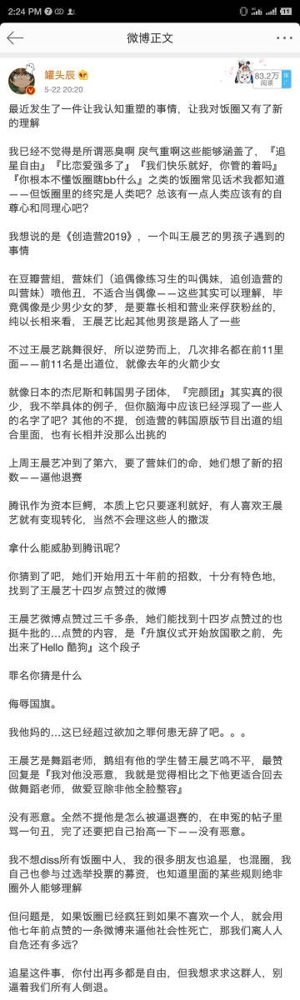
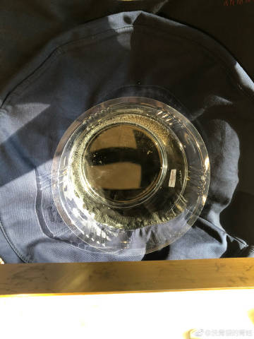
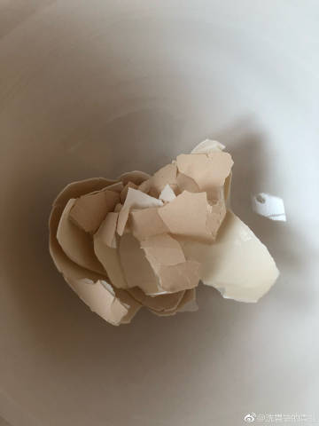

什么事都能挑动民族主义情绪对吧，如果真理越辩越明怎么不把墙拆掉用来自由交换意见？一个辩论外交部都出来了。就算是fox和cnn这种政治方向这么明确的电视台也是一直都有常驻的客座反方任何事都要辩论一下。相反，声音一致的大外宣对于辩论这种事还是很敏感呢，毕竟什么事都要发通稿，不一样的声音就想
...全文

洗胃袋的青蛙
Wed May 29 04:20:14 +0800 2019 来自 iPhone
洗胃袋的青蛙
Wed May 29 00:10:39 +0800 2019 来自 iPhone
洗胃袋的青蛙
Tue May 28 02:32:55 +0800 2019 来自 iPhone
真是恶心，恶臭，什么样的.就有什么样的.。
@Audrey李佳佳:
看了最近的种种，真是觉得毛骨悚然。
-

-
-

-
-
洗胃袋的青蛙
Mon May 27 14:56:26 +0800 2019 来自 iPhone
//@神猫罗尼休://@JoannaBlue: 这意思是让艺术系的学生尽早适应带着镣铐跳舞的未来吗//@灯七精分
:我不喜欢≠这个东西就是垃圾，我不喜欢≠我要举报，我不喜欢≠让公权铁锤消灭，就这么简单的道理。最搞笑的是评论还有人说这是公共展会给少年儿童带来不好影响，
@黑茶伯爵:
#2019四川美术学院毕业生作品展#
关于这件事，今天和人展开了一点儿小小的讨论。因为有人觉得这些作品不好看，理应被撤。那么得在这儿说一下什么是毕业展。我也是一个美院毕业的学生，毕业展可以说是一位艺术生此生最正规，正式，也是最后一次，不涉及金钱利益，不被老板公司甲方所规范，展示给大家看
...全文
![[失望]](./洗胃袋的青蛙_01_files/d_shiwang-b4bf17068f.png)
.jpg)
洗胃袋的青蛙
Mon May 27 01:36:46 +0800 2019 来自 iPhone
我看胡锡进已经把这个微博删了。胡锡进这个人精神分裂间歇性低级红。
@拍案正法:
大骂中国政府不投降的都是什么人？  大骂中国政府不投降的都是什么人？
大骂中国政府不投降的都是什么人？  网页链接
网页链接
大骂中国政府不投降的都是什么人？ 网页链接
洗胃袋的青蛙
Sun May 26 14:11:33 +0800 2019 来自 iPhone
确实不错years andy ears
洗胃袋的青蛙
Sun May 26 05:04:37 +0800 2019 来自 iPhone
微博ocr还是不行啊，文字换成图片就不敏感了。
洗胃袋的青蛙
Sun May 26 05:01:26 +0800 2019 来自 iPhone
Share with pics
洗胃袋的青蛙
Sun May 26 04:33:04 +0800 2019 来自 微博 weibo.com
.
洗胃袋的青蛙
Sun May 26 03:50:09 +0800 2019 来自 微博 weibo.com
.
.jpg)
洗胃袋的青蛙
Sat May 25 18:31:12 +0800 2019 来自 iPhone
![[笑cry]](./洗胃袋的青蛙_01_files/d_xiaoku-f2bd11b506.png)
洗胃袋的青蛙
Sat May 25 00:06:45 +0800 2019 来自 微博 weibo.com
这儿还有廉耻吗？

洗胃袋的青蛙
Fri May 24 21:48:56 +0800 2019 来自 微博 weibo.com
@Scalers:
如果你能看完，算我输。 互联网的那点事的微博视频
互联网的那点事的微博视频
互联网的那点事的微博视频
洗胃袋的青蛙
Fri May 24 15:22:31 +0800 2019 来自 iPhone
被被屏蔽了
洗胃袋的青蛙
Fri May 24 15:15:57 +0800 2019 来自 iPhone
被屏蔽了
洗胃袋的青蛙
Fri May 24 04:11:17 +0800 2019 来自 微博 weibo.com
Chernobyl
.jpg)
洗胃袋的青蛙
Thu May 23 19:29:04 +0800 2019 来自 微博 weibo.com
看到有人说崔永元推特背景图换上了“指鹿为马”，看来他还是没有认输，其他的问题不谈，在这件事情上还是支持他的。不确定是不是他，艾未未关注了大概率是吧。
洗胃袋的青蛙
Thu May 23 01:22:36 +0800 2019 来自 微博 weibo.com
帮上一条微博做了个图。
洗胃袋的青蛙
Wed May 22 21:42:59 +0800 2019 来自 iPhone
..............


.jpg)
洗胃袋的青蛙
Tue May 21 23:22:59 +0800 2019 来自 iPhone
洗胃袋的青蛙
Tue May 21 11:45:13 +0800 2019 来自 iPhone
非常期待权力的游戏终集腾讯特色版本。not even joking![[憧憬]](./洗胃袋的青蛙_01_files/d_xingxingyan-c64b6a744b.png)
洗胃袋的青蛙
Tue May 21 11:25:39 +0800 2019 来自 iPhone
Share with pics
洗胃袋的青蛙
Tue May 21 11:13:27 +0800 2019 来自 iPhone
《切尔诺贝利》，“当核污染空气飘到邻国东德，学校被停课，孩子们必须待在家里；而切尔诺贝利地区的孩子们还在外玩耍，以致孩子们身体腐烂。”
.jpg)
洗胃袋的青蛙
Sun May 19 20:09:09 +0800 2019 来自 微博 weibo.com
省司法院释宪了！全省公投了！省立法院立法了！屌！奥威尔式新语。
洗胃袋的青蛙
Sun May 19 05:06:07 +0800 2019 来自 iPhone
好像川普这种保守派是傻屌是所有人的共识，骂川普就是一片掌声，像那种禁止堕胎的sb法案也不那么出乎意料，毕竟共和党百分百都是宗教人士。
@洗胃袋的青蛙:
2019-05-19
一个月前的。标记了没看，补一补
2019-05-19一个月前的。标记了没看，补一补
洗胃袋的青蛙
Sun May 19 04:58:37 +0800 2019 来自 iPhone
洗胃袋的青蛙
Sat May 18 17:58:42 +0800 2019 来自 iPhone
站队文化和有罪推定原则是强国必备的素质，负责任大国秉持拯救全人类的伟大信念，在道德高地上靠一腔鸡血抵御寒冷，毕竟是掌握真理的人呐。
对待其他文化以严厉的关怀去感化，再教育。
洗胃袋的青蛙
Sat May 18 01:29:54 +0800 2019 来自 iPhone
这个真的好优秀哦
.jpg)
洗胃袋的青蛙
Wed May 15 06:26:30 +0800 2019 来自 iPhone
我最近痴迷于观察官媒的语调，煽动民族主义情绪时像是在雕琢一件艺术品，令人感叹怎么会有这么完美的权威国家，是的，活生生的例子，有时候有些小瑕疵，好像是刻意用现实来贴近文学创作，甚至感觉自己一不小心就会打破第四面墙。

.jpg)
洗胃袋的青蛙
Mon May 13 17:47:21 +0800 2019 来自 iPhone
发现
洗胃袋的青蛙
Mon May 13 15:31:13 +0800 2019 来自 iPhone
推荐一部纪录片，致命中国，纳瓦罗写的书 ，同时有一部纪录片。
洗胃袋的青蛙
Mon May 13 05:02:46 +0800 2019 来自 iPhone
Repost
@GoodeInc工作室:
恭喜卫肖凭借在BBC迷你剧集#A Very English
Scandal#中饰演Norman Scott一角获得2019年BAFTA TV Awards最佳男配角。
洗胃袋的青蛙
Mon May 13 04:08:52 +0800 2019 来自 iPhone
最近在看东欧剧变的资料，包括电影。
洗胃袋的青蛙
Sun May 12 05:26:26 +0800 2019 来自 iPhone
今天5:25日出。
.jpg)
洗胃袋的青蛙
Fri May 10 15:30:56 +0800 2019 来自 网易云音乐
分享单曲日が落ちるまで (直到日落)（@网易云音乐）
日が落ちるまで (直到日落)（@网易云音乐）
洗胃袋的青蛙
Fri May 10 14:17:20 +0800 2019 来自 iPhone
![[爱你]](./洗胃袋的青蛙_01_files/d_aini-09d5f3f870.png)
洗胃袋的青蛙
Thu May 09 04:26:58 +0800 2019 来自 iPhone
癫狂

![[微笑]](./洗胃袋的青蛙_01_files/d_hehe-0be7e6251f.png)

![[兔子]](./洗胃袋的青蛙_01_files/d_tuzi-d2b0222faa.png)
![[费解]](./洗胃袋的青蛙_01_files/d_feijie-c1df37ef03.png)
.jpg)
洗胃袋的青蛙
Sat May 04 04:22:34 +0800 2019 来自 iPhone

@YouTube精选:
昨天#生活大爆炸#
全剧正式杀青。最后一场戏录完后，大家都眼含泪水、感慨万千，发文感谢剧组、卡司和观众们这么多年来的努力和支持。
“莱纳德”Johnny Galecki哽咽着说：“一切对我们来说是梦想成真，这12年来你们一直是最好的观众。”
“潘妮”Kaley Cuoco转达了主创Chuck Lorre的话：“《生活大 ...全文
“莱纳德”Johnny Galecki哽咽着说：“一切对我们来说是梦想成真，这12年来你们一直是最好的观众。”
“潘妮”Kaley Cuoco转达了主创Chuck Lorre的话：“《生活大 ...全文
洗胃袋的青蛙
Sat May 04 04:10:53 +0800 2019 来自 iPhone
我觉得这部剧没品的地方在于自带一股对所谓geek文化的偏见。类似于开种族笑话，不过不是消解固有印象的自嘲方式，而是特意选去一个非常片面的视角使之加深。//@谷大白话:又有追F6的年代最后一集播出时的感觉了![[伤心]](./洗胃袋的青蛙_01_files/l_shangxin-49b2fe44a6.png)
@YouTube精选:
昨天#生活大爆炸#
全剧正式杀青。最后一场戏录完后，大家都眼含泪水、感慨万千，发文感谢剧组、卡司和观众们这么多年来的努力和支持。
“莱纳德”Johnny Galecki哽咽着说：“一切对我们来说是梦想成真，这12年来你们一直是最好的观众。”
“潘妮”Kaley Cuoco转达了主创Chuck Lorre的话：“《生活大 ...全文
“莱纳德”Johnny Galecki哽咽着说：“一切对我们来说是梦想成真，这12年来你们一直是最好的观众。”
“潘妮”Kaley Cuoco转达了主创Chuck Lorre的话：“《生活大 ...全文
![[哈哈]](./洗胃袋的青蛙_01_files/d_haha-0ec05e6dad.png)


.jpg)
洗胃袋的青蛙
Mon Apr 29 03:36:10 +0800 2019 来自 iPhone
看完啦！


.jpg)
洗胃袋的青蛙
Fri Apr 26 05:39:19 +0800 2019 来自 iPhone
昨天做噩梦，梦到被人拿刀抢劫，我还联想到了云图台词，愤怒地说「我绝不向暴力犯罪屈服」。![[吃瓜]](./洗胃袋的青蛙_01_files/d_chigua-7a95e6efc4.png) 然后我就肾上腺素，热醒了。不过不在梦里我应该会跑。 我只有把这唯恐丢失的感觉记牢
然后我就肾上腺素，热醒了。不过不在梦里我应该会跑。 我只有把这唯恐丢失的感觉记牢
然后我就肾上腺素，热醒了。不过不在梦里我应该会跑。 我只有把这唯恐丢失的感觉记牢
洗胃袋的青蛙
Thu Apr 25 22:44:34 +0800 2019 来自 iPhone
//@贾樟柯:女性的声音。
@贾樟柯电影:
“我都不如这个高压锅，起码它感受到压力的时候还能释放蒸汽。”
不用担心，一切正在慢慢变好！
5月10日母亲节，《半边天》为全球女性发声。#半边天0510#
贾樟柯电影的秒拍视频
不用担心，一切正在慢慢变好！
5月10日母亲节，《半边天》为全球女性发声。#半边天0510#
贾樟柯电影的秒拍视频
![[喵喵]](./洗胃袋的青蛙_01_files/d_miao-c1b3d563bd.png)
洗胃袋的青蛙
Wed Apr 24 22:44:37 +0800 2019 来自 iPhone
最日常的网站了，只剩脏话。//@严锋:实在搞不懂英语维基为什么要墙，懂英语的其实更……爱国，随便找个在国外读书的中国学生就明白了。//@英语蔡Sir: 希望过段时间能恢复。//@蜜蜂_秃顶成就达成：查学术资料，我上哪里查？？？//@鬼神哲科FANtasyFOPCh耶:![[允悲]](./洗胃袋的青蛙_01_files/d_yunbei-a14a649db8.png) 还我维基 我要查一堆资料啊
还我维基 我要查一堆资料啊
还我维基 我要查一堆资料啊
@null:
抱歉，作者已设置仅展示半年内微博，此微博已不可见。
洗胃袋的青蛙
Wed Apr 24 20:46:41 +0800 2019 来自 微博 weibo.com
感觉来说灭霸的人物塑造算是完蛋了。。
洗胃袋的青蛙
Wed Apr 24 04:59:28 +0800 2019 来自 iPhone
审查是必须的，学会自我阉割是必须的，文化为（服务，审核具体规则是没有的，大概就是老大哥觉得行就行，反正比法律高点吧。分级是不会分级的，分级规则太明确怎么办。大家统一思想，团结起来努力超过魏玛共和国发展速度。//@peRFect_ZERO:前图书狗上周认真思考了一下中文场刊是不是非法出版物……
洗胃袋的青蛙
Tue Apr 23 12:06:34 +0800 2019 来自 iPhone
//@Vesper鹿:转发微博
@嗨Q电影:
【高清旧图】2005年12月9日出席电影《赛末点》洛杉矶首映礼的斯嘉丽·约翰逊#Scarlett
Johansson#金发红唇人间尤物，纯真又性感![[给你小心心]](./洗胃袋的青蛙_01_files/qixi2018_xiaoxinxin-c76bf85343.png)
洗胃袋的青蛙
Tue Apr 23 05:02:06 +0800 2019 来自 iPhone
有一种镜子人，延伸自己的每一块皮肤用来反射所接受的信息，仅仅作为一面镜子存在，甚至他们说话的腔调都模仿得惟妙惟肖。

.jpg)
洗胃袋的青蛙
Mon Apr 22 04:52:31 +0800 2019 来自 iPhone
//@DrHueyLi:你果然整了快7分钟啊，太可耻了。以后超时应该罚款。
@DAVYLOUIS:
昨天晚上在大学脱口秀社的场子演出，可能是我目前讲的最好的一场了。 奶酪不被老鼠吃的微博视频
奶酪不被老鼠吃的微博视频
洗胃袋的青蛙
Mon Apr 22 04:43:48 +0800 2019 来自 iPhone
@百合吐槽菌:
高校排查性少数群体后续，北工大疑似有学生被劝退，复旦大学知学社有信息员潜伏……（图源豆瓣这是真的吗？原博已不存在(有北工大和复旦更新)）
这是真的吗？原博已不存在(有北工大和复旦更新)）

洗胃袋的青蛙
Sat Apr 20 15:34:58 +0800 2019 来自 iPhone
//@让火焰净化憨批://@K23号-警备中:杰哥，这还半个多月呢//@日常逗逼ML桑:杰哥，gkd!//@DF5-1895今天也要干吧露比
:杰哥，gkd//@塔罗神棍姬川
: 谢谢杰哥//@Baka_Kinoko :我家蛮大的//@蜜炼川贝金坷垃
:登dua郎//@椰汁超好喝的
://@浦川实 ://@Sula_nebouxii_ : //@_unknow_Bad_ending :太骚了

洗胃袋的青蛙
Fri Apr 19 14:28:33 +0800 2019 来自 微博 weibo.com
华为和可口可乐合作的P30是30th Anniversary的意思吗？(⊙０⊙) 原来是这样的嘛。
![[吃惊]](./洗胃袋的青蛙_01_files/d_chijing-59b444adb6.png)
洗胃袋的青蛙
Thu Apr 18 17:06:02 +0800 2019 来自 iPhone
Repost
@brainnews脑科学新闻:
 brainnews【刷屏了！科学家恢复死亡猪脑的部分功能，“存活”长达36小时】
brainnews【刷屏了！科学家恢复死亡猪脑的部分功能，“存活”长达36小时】
4 月 18 日 Nature 发表了耶鲁大学研究人员的一篇最新成果，科学家们成功在猪脑死亡 4 小时后恢复其脑循环和部分细胞功能。这一发现挑战了长期以来关于死后某些脑功能停止的时间和不可逆转性质的假设。
吐槽一下： ...全文
brainnews【刷屏了！科学家恢复死亡猪脑的部分功能，“存活”长达36小时】4 月 18 日 Nature 发表了耶鲁大学研究人员的一篇最新成果，科学家们成功在猪脑死亡 4 小时后恢复其脑循环和部分细胞功能。这一发现挑战了长期以来关于死后某些脑功能停止的时间和不可逆转性质的假设。
吐槽一下： ...全文
洗胃袋的青蛙
Thu Apr 18 02:21:13 +0800 2019 来自 iPhone
Share with pics
洗胃袋的青蛙
Tue Apr 16 17:21:41 +0800 2019 来自 iPhone
头疼
洗胃袋的青蛙
Sun Apr 14 21:33:28 +0800 2019 来自 iPhone
个人服从于集体，集体服从于领袖。![[吐]](./洗胃袋的青蛙_01_files/d_tu-cfbe704573.png)
洗胃袋的青蛙
Sat Apr 13 19:44:54 +0800 2019 来自 iPhone
Repost
@AcFun弹幕视频网:
真人版《狮子王》正式预告，彭彭、丁满、刀疤全亮相！
不是应该写真狮版《狮子王》吗？真人版，人呢？![[doge]](./洗胃袋的青蛙_01_files/d_doge-be7f768d78.png)
A站ID：乌鸦预告片
视频链接：网页链接
#acfun#AcFun弹幕视频网的微博视频
不是应该写真狮版《狮子王》吗？真人版，人呢？
A站ID：乌鸦预告片
视频链接：
网页链接#acfun#
AcFun弹幕视频网的微博视频
洗胃袋的青蛙
Sat Apr 13 16:52:52 +0800 2019 来自 iPhone
我的帽子这么大。参照物
-
-

.jpg)
洗胃袋的青蛙
Sat Apr 13 09:03:37 +0800 2019 来自 iPhone
Repost
@SINOSABER光剑爱好者:
星球大战 英灵老卢克！ 这是穿着蓝色半透明雨伞还是蓝色蚊帐布？
星球大战 英灵老卢克！ 这是穿着蓝色半透明雨伞还是蓝色蚊帐布？
洗胃袋的青蛙
Fri Apr 12 02:22:33 +0800 2019 来自 iPhone
《燕尾蝶》，睡觉。
洗胃袋的青蛙
Wed Apr 10 22:45:21 +0800 2019 来自 iPhone
明天可以见室友了_(:3」∠)_
-
-

-
洗胃袋的青蛙
Wed Apr 10 09:15:29 +0800 2019 来自 网易云音乐
分享单曲High Flyin' Bird（@网易云音乐）
High Flyin' Bird（@网易云音乐）
洗胃袋的青蛙
Wed Apr 10 08:53:16 +0800 2019 来自 iPhone
Share with pics
洗胃袋的青蛙
Wed Apr 10 00:18:20 +0800 2019 来自 iPhone
原来吃多了火锅真的会尿尿感觉火辣。辣椒素代谢_(:3」∠)_
洗胃袋的青蛙
Sun Apr 07 20:17:30 +0800 2019 来自 iPhone
记重庆土著带我吃穿穿。“这个是赶油点儿，咱一哈“。
洗胃袋的青蛙
Sat Apr 06 16:26:41 +0800 2019 来自 iPhone
沙赞也太像肥伦了吧
.jpg)
洗胃袋的青蛙
Sat Apr 06 11:17:28 +0800 2019 来自 iPhone
Share with pics
洗胃袋的青蛙
Fri Apr 05 02:12:14 +0800 2019 来自 分享按钮
洗胃袋的青蛙
Thu Apr 04 01:05:00 +0800 2019 来自 微博 weibo.com
//@熊小默: 科技不带来解放，带来新的镣铐
@人民网:
【环卫工配发智能手表，停留20分钟就自动报警喊“加油”】近日，南京河西区域的环卫工人配发了一款手表，除定位功能外，工人们只要在原地停留休息20分钟以上，手表就会自动发出“加油”的报警声，这在管理规定里也属违规停留。工人不解：好好把马路扫干净不就行了？@南京零距离
南京零距离的微博视频
南京零距离的微博视频
洗胃袋的青蛙
Tue Apr 02 12:06:09 +0800 2019 来自 iPhone
Repost
@WeLens:
伊斯特伍德为什么一直不“退休”？
为什么越老拍得越好？
年近90仍不退休，他说因为童年见过“努力生存下去的人”
为什么越老拍得越好？
年近90仍不退休，他说因为童年见过“努力生存下去的人”
洗胃袋的青蛙
Sat Mar 30 05:09:45 +0800 2019 来自 iPhone
最近 我准备 躺尸
![[傻眼]](./洗胃袋的青蛙_01_files/d_shayan-4e8000eba9.png)
洗胃袋的青蛙
Thu Mar 28 16:52:34 +0800 2019 来自 iPhone
Repost
@Joken是个教书匠:
退欧时间推迟，今天各大英国报纸头版
.jpg)
洗胃袋的青蛙
Thu Mar 28 16:51:56 +0800 2019 来自 iPhone
![[顶]](./洗胃袋的青蛙_01_files/d_ding-0a935b6be1.png)
![[打脸]](./洗胃袋的青蛙_01_files/d_dalian-306eefb12a.png)
洗胃袋的青蛙
Sun Mar 24 17:29:54 +0800 2019 来自 iPhone
同时感谢同学收留花光钱的我，哭哭
洗胃袋的青蛙
Sat Mar 23 10:56:17 +0800 2019 来自 iPhone
All the odds are in my favor
Something's bound to begin.
Something's bound to begin.
洗胃袋的青蛙
Thu Mar 21 18:41:55 +0800 2019 来自 iPhone
Repost
@外国戏剧bot:
这是加缪的诺贝尔奖获奖感言
但，一个被遗弃于世界某角落无名囚徒的沉默
足以把他从放逐中解放出来
在他一生的际遇中
无论晦暗，抑或腾达
无论深陷专治者的囹圄，抑或言论自由的时刻外国戏剧bot的微博视频
但，一个被遗弃于世界某角落无名囚徒的沉默
足以把他从放逐中解放出来
在他一生的际遇中
无论晦暗，抑或腾达
无论深陷专治者的囹圄，抑或言论自由的时刻
外国戏剧bot的微博视频
洗胃袋的青蛙
Fri Mar 15 13:05:30 +0800 2019 来自 微博搜索
快被B站还有豆瓣上的这个广告恶心死了
@人是铁饭是钢恨铁不成钢:
为什么每次打开B站都能看到那个“一个公式带你秒懂天下英语”，是给了多少钱做广告了吗？
.jpg)
洗胃袋的青蛙
Wed Mar 13 04:50:52 +0800 2019 来自 iPhone
有个人在红场散发传单，但被克格勃逮住。克格勃没收了所有传单却发现那些传单不过是白纸一张。克格勃想了想，决定把发传单的人抓捕：你以为我不知道你在说什么？
洗胃袋的青蛙
Wed Mar 13 04:45:04 +0800 2019 来自 iPhone
今日笑话
美国人：我敢在白宫外面大喊“里根下台”，你敢吗？
苏联人：有什么不敢的?
说完，苏联人走到克里姆林宫外大喊：“里根下台”。
美国人：我敢在白宫外面大喊“里根下台”，你敢吗？
苏联人：有什么不敢的?
说完，苏联人走到克里姆林宫外大喊：“里根下台”。

洗胃袋的青蛙
Tue Mar 12 16:10:14 +0800 2019 来自 iPhone
今天看到的笑话，“老国王说，谁种出的花最好看，谁就可以成为下一任国王。但全国的孩子们都知道，国王给的种子是炒熟的。所以检阅那天，孩子们怀里的花盆只有泥土没有花朵。国王看了一圈没有发现哪个孩子种出了花，于是很失望，只有勉强自己再当一届。”
洗胃袋的青蛙
Sun Mar 10 22:32:15 +0800 2019 来自 微博 weibo.com
.
.jpg)
洗胃袋的青蛙
Sat Mar 09 22:44:01 +0800 2019 来自 iPhone
我有一次用脸把酒店玻璃门撞掉了。就忽然想起来。
洗胃袋的青蛙
Sat Mar 09 03:09:27 +0800 2019 来自 iPhone
想看惊奇队长，复习不出门....没忍住2.5倍速看了个枪版。
洗胃袋的青蛙
Thu Mar 07 14:27:11 +0800 2019 来自 iPhone
Repost
@好奇心日报:
【《百年孤独》要拍西班牙语剧集，马孔多即将与世人见面】“家族的第一个人被捆在树上，最后一个人正被蚂蚁吃掉。” 《百年孤独》要拍西班牙语剧集，马孔多即将与世人见面
《百年孤独》要拍西班牙语剧集，马孔多即将与世人见面
洗胃袋的青蛙
Thu Mar 07 04:26:10 +0800 2019 来自 iPhone
啊啊啊啊难受啊我不想写机试题了啊
洗胃袋的青蛙
Thu Mar 07 01:32:22 +0800 2019 来自 iPhone
我觉得衣服承载不了精神，这假的和真的一样，都有个屁精神，一说就是精神，还卖出使命感了。别人穿衣服表达自己，这衣服就不得了，自带精神。//@这软:人不要脸，_____。
@NOWRE_:
#NOWRE·TV#
「“Supreme 意大利品牌”，上海店今天开门了…」
「店铺并非 Supreme 美国所属。」
阅读原文👉网页链接 NOWRE现客的微博视频
「“Supreme 意大利品牌”，上海店今天开门了…」
「店铺并非 Supreme 美国所属。」
阅读原文👉
网页链接 NOWRE现客的微博视频
洗胃袋的青蛙
Tue Mar 05 15:59:55 +0800 2019 来自 分享按钮
偶遇到《敢爱敢做》的原曲了 分享单曲：Nothing's Gonna Stop Us Now （分享自 @网易云音乐） Nothing's Gonna Stop Us Now
Nothing's Gonna Stop Us Now
洗胃袋的青蛙
Mon Mar 04 14:46:03 +0800 2019 来自 iPhone
//@SINOSABER光剑爱好者:两个快乐的老年人

.jpg)
洗胃袋的青蛙
Sat Mar 02 05:11:57 +0800 2019 来自 iPhone
我需要看电影，打游戏或是聊天什么的。否则当我大脑放空我就会焦虑，会睡不着觉，当我盯着一片漆黑的房间的时候，如果有造物主他会不会紧张。平凡无助的观察着世界，大草原上马上又到了交配的季节。
洗胃袋的青蛙
Sat Mar 02 03:24:33 +0800 2019 来自 微博 weibo.com
金凯瑞消失好久了，出现在宋飞的谐星买咖啡感觉消受了好多。真的喜欢他。
洗胃袋的青蛙
Wed Feb 27 04:55:10 +0800 2019 来自 iPhone
Repost
@SINOSABER光剑爱好者:
星球大战
【银河新闻台】近期星球大战Ep9传言整理：
1.在约旦片场摄制了两个星球的戏份，其中一个是塔图印。据说全片结尾就设置在塔图印，另外一个则是新星球。还有一个类似渔村/矿镇的场景，会出现雪地兵，该场景还会有机器人工厂，其中包括前传的战斗机器人。
2.Kylo Ren会出现在一个沼泽星 ...全文
星球大战
【银河新闻台】近期星球大战Ep9传言整理：1.在约旦片场摄制了两个星球的戏份，其中一个是塔图印。据说全片结尾就设置在塔图印，另外一个则是新星球。还有一个类似渔村/矿镇的场景，会出现雪地兵，该场景还会有机器人工厂，其中包括前传的战斗机器人。
2.Kylo Ren会出现在一个沼泽星 ...全文
洗胃袋的青蛙
Wed Feb 27 04:36:01 +0800 2019 来自 iPhone
好想找个时间把这个看了啊。虽然故事好像挺俗套。但我最近好焦虑啊好焦虑。焦虑到掉毛了啊。
洗胃袋的青蛙
Tue Feb 26 19:01:20 +0800 2019 来自 iPhone
@Essential_IgorKrol:
2月24日表哥Mark在圣彼得堡的演唱会，以一首温暖又甜蜜的《Can you feel the love
tonight》作为结束，全场观众也一起点亮了荧光棒来回应这精彩的一晚。这首新加入了和声的经典迪士尼歌曲，是不是也让你感受到了爱呢？![[心]](./洗胃袋的青蛙_01_files/l_xin-43af9086c0.png)
#Igor Krol##Mark Seibert##Vera Sveshnikova##Alexandra Kasparova# ...全文
#Igor Krol##Mark Seibert##Vera Sveshnikova##Alexandra Kasparova# ...全文
洗胃袋的青蛙
Tue Feb 26 01:55:49 +0800 2019 来自 iPhone
@头条新闻:
【#沙特宣布所有学校开汉语课#：让教育更具多元性】沙特王储穆罕默德·本·萨勒曼结束访华之际，沙特阿拉伯23日宣布将汉语纳入沙特王国所有教育阶段的课程之中，以使该国教育更具多元性。大部分人认为，在未来的世界，汉语将和英语一样流行且重要，沙特人学汉语是出于时代的要求。（环球时报）

.jpg)
洗胃袋的青蛙
Mon Feb 25 04:09:15 +0800 2019 来自 iPhone
Share with pics
洗胃袋的青蛙
Mon Feb 25 01:49:04 +0800 2019 来自 iPhone
哇//@保松周:《禁色》是明哥所有歌中，我最喜歡的一首。年輕時曾有一段日子，每晚深夜不斷單曲重播。今夜明哥竟然甘願為所有朋友清唱此曲，何其難得。//@Muffintop:此歌还需他唱👏（夸赞周生可爱）
洗胃袋的青蛙
Sun Feb 24 04:26:53 +0800 2019 来自 网易云音乐
分享单曲Maybe This Time（@网易云音乐）
Maybe This Time（@网易云音乐）
洗胃袋的青蛙
Fri Feb 22 14:34:24 +0800 2019 来自 iPhone
//@远离中医药:官方钦定的《中兽医学》，几乎就是把人类巫医药字节替换的克隆一遍....
 查看图片 //@瘦驼: 图片评论 评论配图 //@顾有容:你知道有个专业叫中兽医么
查看图片 //@瘦驼: 图片评论 评论配图 //@顾有容:你知道有个专业叫中兽医么![[二哈]](./洗胃袋的青蛙_01_files/d_erha-139d0e07bd.png) //@疯魔zhoujypp:回复 @顾有容:给动物中药投食我第一次见//@疯魔zhoujypp:如此魔幻？
//@疯魔zhoujypp:回复 @顾有容:给动物中药投食我第一次见//@疯魔zhoujypp:如此魔幻？
 查看图片 //@瘦驼: 图片评论
查看图片 //@瘦驼: 图片评论  评论配图 //@顾有容:你知道有个专业叫中兽医么//@疯魔zhoujypp:回复 @顾有容:给动物中药投食我第一次见//@疯魔zhoujypp:如此魔幻？
评论配图 //@顾有容:你知道有个专业叫中兽医么//@疯魔zhoujypp:回复 @顾有容:给动物中药投食我第一次见//@疯魔zhoujypp:如此魔幻？
@null:
抱歉，作者已设置仅展示半年内微博，此微博已不可见。
洗胃袋的青蛙
Thu Feb 21 04:20:33 +0800 2019 来自 iPhone
Share with pics


洗胃袋的青蛙
Wed Feb 20 03:30:59 +0800 2019 来自 iPhone
Share with pics